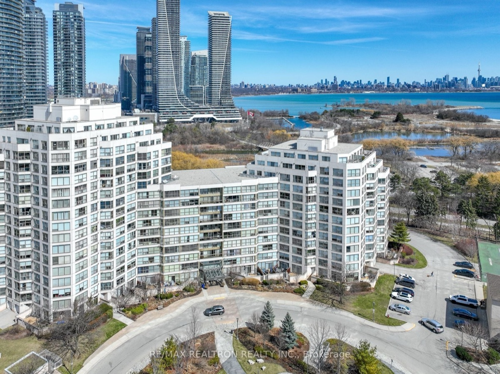
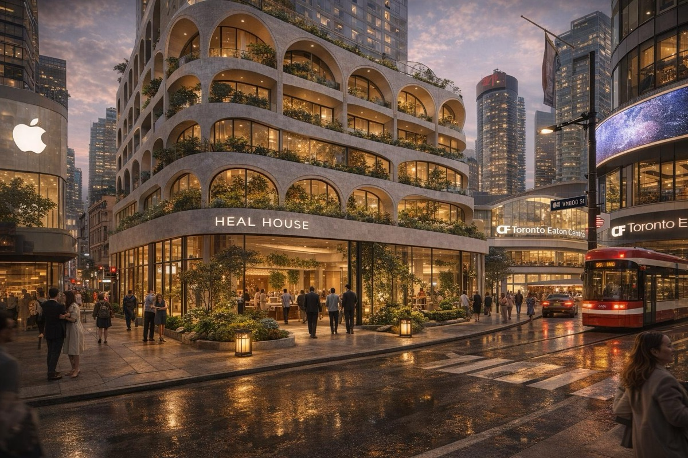
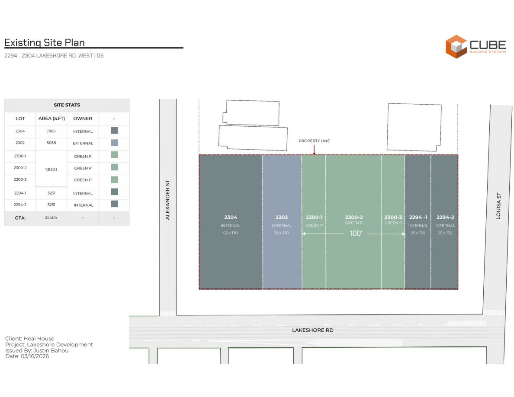
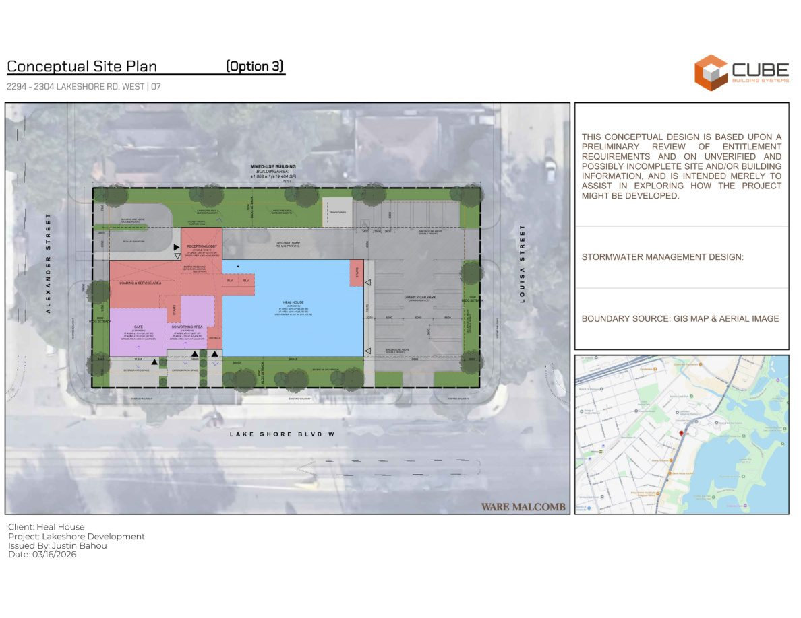
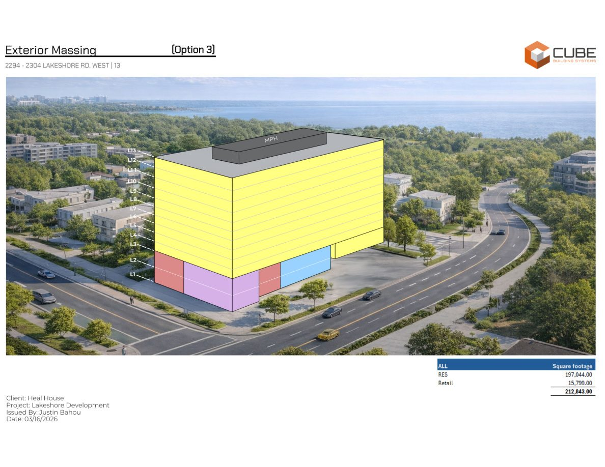
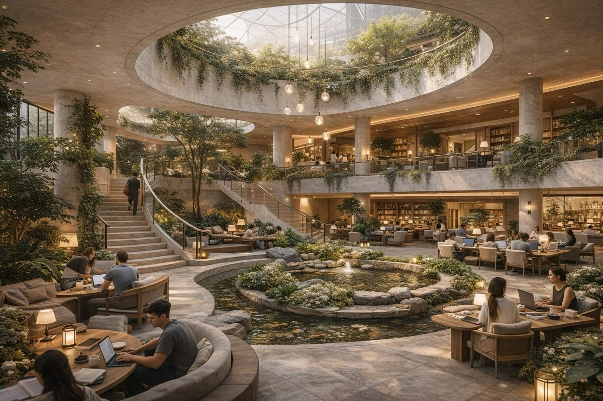
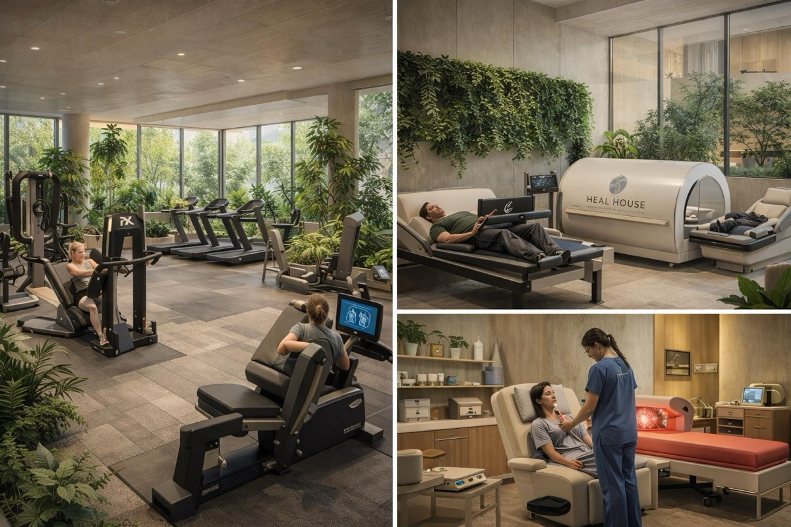

A City parking parcel can unlock a deeper public outcome.
The Green P lands sit inside a larger Lakeshore opportunity. On their own, they serve a narrow civic function. As part of the Heal House assembly, they can become affordable housing, community wellness, and a permanent neighbourhood benefit.



Today
A constrained municipal parcel with limited public impact beyond parking.
Unlocked
A complete-site plan with housing, services, and community-facing ground-floor activation.
Public Benefit
Affordable housing delivered by a non-profit partner, supported by Heal House operations and accountability.
The Green P parcel makes the complete site coherent.
Q / Cube Building Systems’ draft massing package shows how the Green P lands can become part of a larger civic-minded site plan — not a standalone parking asset.





